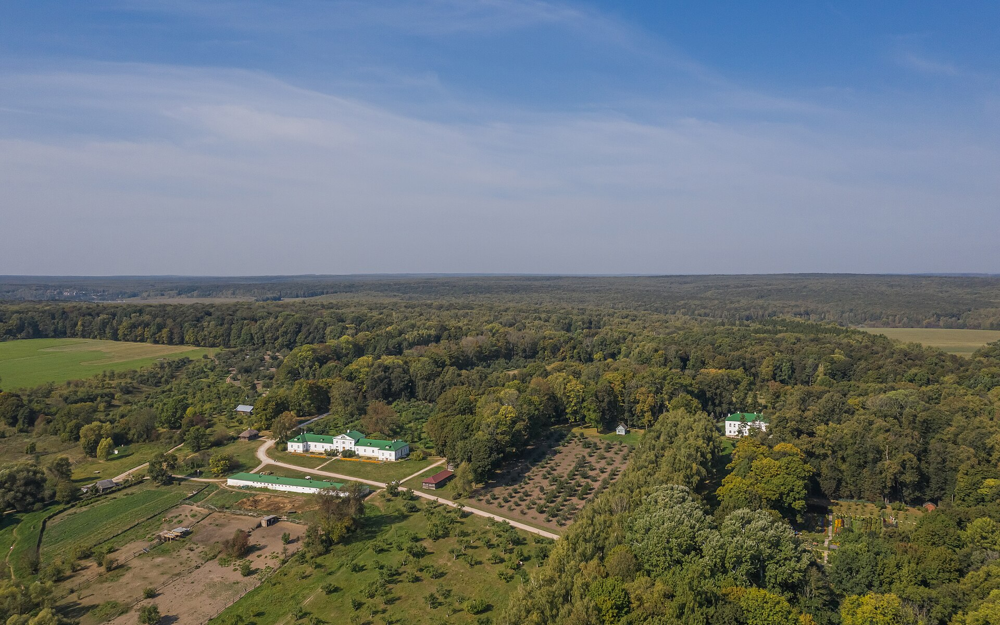
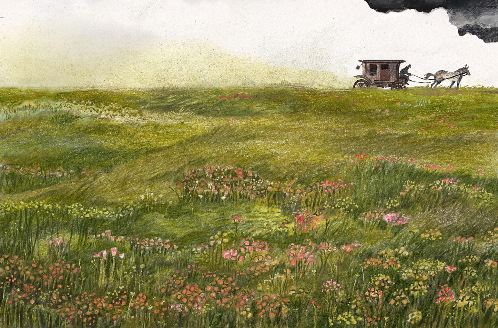

Estate Synecdoche

Estate synecdoche refers to Tolstoy’s use and description of estates and their management to represent aspects of their respective landowners. Whether it be in different methods of organizing and keeping up their estates or their attitudes towards their involvement, one might say that the estate reflects to the reader a view of the landowner’s personality in condensed form. Key to the novel’s use of this narrative device are the four central characters of Konstantin Levin, Stiva, Dolly, and Vronsky, who all own or manage estates with distinctive aspects relative to one another.
Levin’s estate is the first that Tolstoy describes in detail. After arriving at his estate following Kitty’s rejection of his marriage proposal, the reader sees a restless Konstantin looking to take his mind off the events that transpire in Moscow, lifting weights, “trying to instill some vigor into himself” (Tolstoy 95). One then sees Levin learn about new developments regarding his estate and visit the cattle shed to inspect a newborn calf, allowing himself to be “plunged [...] into all the details of managing his estate, which was large and complicated” (Tolstoy 96). The size and importance of the estate are further emphasized in the following chapter, in which the narrator describes the fondness with which Levin maintains his home: “The house was large and old, and although Levin lived on his own, he heated and occupied all of it [...] this house was a whole world for Levin. It was a world in which his father and mother had lived and died. They had lived a life which to Levin seemed the acme of perfection, and which he dreamed of reviving with his own wife and with his family” (Tolstoy 97). From the first chapters of Anna Karenina, one learns of the pains with which Levin scrutinizes his estate’s affairs, as he is shown time and again to do so with himself. Secondly, the reader might compare Levin’s care with Oblonsky’s way of handling a landowner’s responsibilities. Despite the estate at Ergushovo being part of Dolly’s dowry, and therefore hers by right, the narrator provides descriptions of how Oblonsky approaches the matter of estate management when Dolly “asked him to look over the house and see to whatever repairs might be necessary” (Tolstoy 263). These repairs are done according to Oblonsky’s best judgment, as he “tried to be an attentive father and husband” and so decides to “reupholster all the furniture in cretonne, put up curtains, clear the garden, put up a little bridge by the pond, and plant some flowers” (Tolstoy 263). These are cosmetic choices, meant to make the estate look as nice as possible, but in lieu of “many other vital things, the absence of which later made Darya Alexandrovna’s life a misery” (Tolstoy 263). Representative of Oblonsky’s general demeanor towards his family–not of malice or absolute disinterest, but rather fundamental misapprehension as to their most basic needs–the reader then has the opportunity to see Dolly’s qualities as a landowner. Dolly’s management of the estate is much different than Oblonsky’s in that, despite her initial “despair when she encountered what from her point of view were terrible calamities instead of tranquility and rest,” she is determined to bring things back into order (Tolstoy 264). This determination is met with Matryona Filimonova’s action, which allows the both of them to bring together a “club” composed of “the steward’s wife, the village elder, and the clerk” with whom they can fix the roof, acquire common farm animals and build the necessities of a home, such that “life’s difficulties gradually began to be ironed out” (Tolstoy 265). It is only through Dolly that the estate becomes livable, and it is in her handling of estate affairs that the reader sees her resourcefulness and ability to surpass once-paralyzing despair. Fourthly, Vronsky’s style of estate management as a landowner is distinct from the other three listed above, specifically in his frugality. Through Anna, the reader learns that “It was all very neglected, but Alexey has revived everything” and that Vronsky “is very fond of this estate, and has developed a passionate interest in farming, which I never expected from him” (616). Knowing that “he was a man hated disorder” and that he has the tendency of “[shutting] himself away and [bringing] all his affairs into a state of clarity” five times a year (306), one might see his qualities as a landlord as being a confirmation of his orderly personality. Additionally, as Anna recounts a story in which “the peasants asked him to reduce the rent for the meadow, and he refused, and I accused him of being stingy” to which Vronsky replies by setting out to build a hospital (616), one might also note the mirroring with his behavior giving money for the watchman’s widow after Anna’s suggestion that something be done to support her for her husband’s death (67). And his frugality is again noted in Filip the coachman’s observation that “They might be rolling in money, but they only gave us three measures of oats…What’s three measures? Just a nibble. You can get oats from innkeepers for forty-five kopecks these days,” which he compares to Levin’s estate: “When people come to us, their horses can have as much as they can eat” (644). Estate synecdoche is used in Anna Karenina to accentuate certain characteristics of the novel’s main characters. Tolstoy uses each landlord’s management of their estate to confirm aspects of their personalities that earlier may have been mentioned only in passing or shown only momentarily, now externalized in the form of the estate. Telling the reader that each landlord takes a special interest in their estate would be insufficient to differentiate them from each other; rather, Tolstoy shows the reader where that interest is focused, on which facets, and for what reasons, admitted or implicit to the reader and the landlord themself.